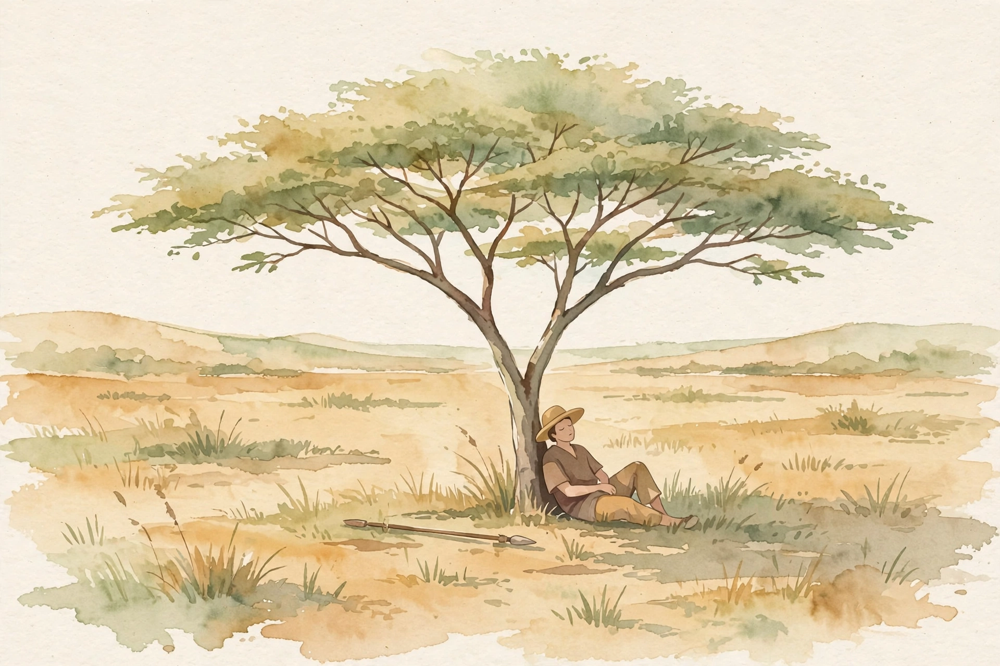
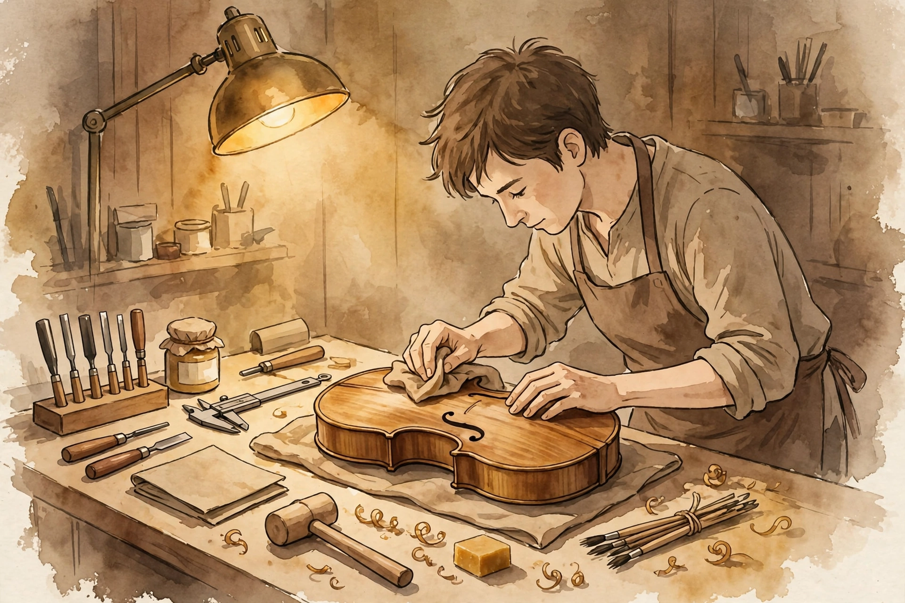

Deep Questions · Companion · 18 min
Slow Productivity
The answer to burnout: chronic overload, its three problems, and the three principles of slow productivity.

Cal Newport. Photo: robertglazer.com (Elevate Podcast). This episode introduces his slow productivity thesis.
Watch. The official episode video. Use the chapter menu above to jump to any section of this companion as you listen.
The Wisdom Index: every nugget in this companion
Part 1
The Anti-Productivity Wave
Newport opens with the cultural moment. Since February 2019, when Jenny Odell's How to Do Nothing became a New York Times bestseller and landed on Barack Obama's best books list, a visible pushback against productivity has grown. The pandemic amplified it, but the movement predates the pandemic. A string of books followed: Celeste Headlee's Do Nothing, Devon Price's Laziness Does Not Exist, Anne Helen Petersen's Can't Even, Oliver Burkeman's Four Thousand Weeks. They all make the same point: we are burnt out, we do too much, we are tired of doing too much.
Newport saw it in his own audience. In 2020 he wrote a newsletter essay asking whether the term productivity was over. It sparked a heated discussion and two follow-up posts. His readers were exhausted with activity, at work and outside it, and wanted something more than tips for getting more done.
Nugget 1 · The moment
The anti-productivity wave
What happened. Source fact From February 2019, a run of bestselling books argued we are burnt out and doing too much. Newport's own 2020 essay on whether productivity was over drew a heated response from exhausted readers.
Why it matters. Interpretation The diagnosis is now mainstream. What we lack is a treatment plan.
The principle. Interpretation Agreeing on the disease is step one. The hard part is the prescription.
Part 2
Doing Nothing Is Not the Answer
The question these books leave unanswered is what to do about burnout. The typical answer is: just do less, and be okay with that. Some frame it as political resistance against an exploitative economic system. Others frame it as defiance of an overproduction culture, perhaps rooted in the Protestant work ethic. Newport says this advice is fine as far as it goes, but it is not a full solution.
His reason is human nature. We like to do things. Nothing makes us more consistently miserable than doing nothing for an extended stretch. It makes us uncomfortable, non-efficacious, rootless, bored, and anxious. The problem is not activity. The problem is too much activity. We need something more sophisticated than permission to do less.
Nugget 2 · The gap
Doing nothing is not the answer
What happened. Source fact Newport argues that extended idleness makes humans miserable, uncomfortable, and anxious, so the answer cannot be simply doing less.
Why it matters. Interpretation Rest without purpose is not rest. It is drift, and drift hurts.
The principle. Interpretation Do not subtract activity. Fix its shape.
Part 3
The Paleolithic Baseline
To design a better answer, Newport first asked what activity is natural for humans. He spoke with a quantitative anthropologist from Oxford who studies hunter-gatherer tribes in the Philippines, measuring their activity levels with careful methods and extrapolating to our species' past.
The picture: skilled and important work nearly every day, mainly food acquisition and preparation plus child rearing. Expert work, too. Gathering herbs demands deep knowledge of plants and their uses. Hunting without rifles is a highly skilled pursuit. But the pace is natural, with ups and downs. An all-day hunt includes a two-hour midday rest, a nap in the shade. And there is never a list of eighteen things to get through. The day is: we do this today, then that.

Illustration. The paleolithic baseline: skilled work at a natural pace, with rest built in. AI-generated watercolor made for this page.
Nugget 3 · The wiring
The paleolithic baseline
What happened. Source fact An Oxford anthropologist's work on Philippine hunter-gatherer tribes shows skilled daily work at a natural pace, with long midday rests and no stacked obligation lists.
Why it matters. Interpretation This is the hardware spec. Modern work that violates it produces modern misery.
The principle. Interpretation Judge any work system against the baseline: skilled, paced, uncluttered.
Part 4
Chronic Overload
Compare that with modern knowledge work. Obligations fly at us through email, Zoom requests, hallway grabs from the boss. The result is a massive list of explicit and implicit commitments. Newport calls this state "chronic overload": more on your plate than you can imagine ever finishing, and it never clears. It causes three distinct problems, none of which our ancestors faced.
The three problems of chronic overload
Source: Deep Questions, Core Idea: Slow Productivity, the three problems of chronic overload. Numbers from the episode. Labels are paraphrase.
Nugget 4 · The diagnosis
Chronic overload
What happened. Source fact Newport defines chronic overload as carrying more obligations than you can imagine completing, persistently, with 700 unread messages and 75 projects as his example.
Why it matters. Interpretation Overload is not a busy week. It is a steady state, and steady states reshape the brain.
The principle. Interpretation Name the state before you fight it. You cannot fix what you call normal.
Part 5
The Short-Circuited Planner
Problem one is neurological. Humans have a brain center dedicated to long-term planning and goal completion, more powerful than anything our primate relatives carry. It ties into motivation: we feel good making a plan, better executing it, bad failing it.
That system overloads when it faces 700 unread messages and 75 projects. It cannot imagine how to accomplish all of it, so it short-circuits. The result is anxiety and misery. Our ancestors never had 700 unread messages, each one a commitment the mind cannot wrap itself around.
Nugget 5 · The mechanism
The short-circuited planner
What happened. Source fact Newport argues that an unfinishable obligation list overloads the brain's planning center, which evolved for long-term goals, producing anxiety.
Why it matters. Interpretation The anxiety is not a character flaw. It is a circuit breaker doing its job.
The principle. Interpretation Keep the list short enough that your planner can see the finish line.
Part 6
The Overhead Spiral
Problem two is the overhead spiral, which Newport calls one of the more insidious tortures of modern office work. Every project carries fixed coordination overhead: meetings to plan, a non-trivial number of emails to move things forward. One project is fine. Twenty-five concurrent projects, each demanding its weekly meeting and its couple dozen emails, add up until the schedule is all overhead. You spend nearly all your time talking about the work, with no time left to execute it.
The pandemic made it visible. Knowledge workers reported eight straight hours per day in Zoom, doing email inside the meetings. One complaint Newport heard captures it: a worker who did not know when to use the bathroom during the day. That is the overhead spiral personified: a parody of work life where all you do is talk about work.
the knowledge worker equivalent of chinese water torture
Cal Newport on the overhead spiral · Deep Questions
Nugget 6 · The math
The overhead spiral
What happened. Source fact Newport shows how fixed per-project overhead multiplies across 25 concurrent projects until coordination consumes the whole schedule, as the pandemic's eight-hour Zoom days demonstrated.
Why it matters. Interpretation Each new commitment looks small in isolation. The cost is in the multiplication.
The principle. Interpretation Count the overhead, not just the work. Say no at the margin where the spiral starts.
Part 7
The Relentless Pace
Problem three is pace. With chronic overload, there is constant pressure on execution because there is always more to do and you are always behind. Every available minute fills with work, plus evenings and weekends to dodge the overhead spiral. Effort pegs at 10 on a 1-to-10 scale, day after day after day, with no time to relax or downshift.
Remember the ancestors: an all-day hunt with hours resting in the shade, or a rainy day with no hunting at all. We are not wired for a relentless pace with no relief. Newport offers this as the detailed socio-physiological explanation for what the anti-productivity books described: chronic overload alienates us from the rhythms of work we are wired for, and that is why we are not happy.
i don't know when to use the bathroom during the day
A knowledge worker's complaint, quoted by Cal Newport · Deep Questions
Nugget 7 · The speed
The relentless pace
What happened. Source fact Newport argues that chronic overload pins effort at 10 out of 10 with no downshift, which humans are not wired to sustain.
Why it matters. Interpretation Rest is not a reward for finishing. It is part of the work cycle.
The principle. Interpretation If your pace has no low gear, you do not have a pace. You have a countdown.
Part 8
The Three Principles
Slow productivity is Newport's answer: a redefinition of productivity built from the ground up to realign work with our ancient wiring. Three elements: do fewer things, do them at a natural pace, and obsess over the quality of what you do. A productivity that prioritizes these three can get us back to the rhythms we are wired for while still letting us do interesting work, grow companies, and earn autonomy.
Nugget 8 · The reframe
The three principles
What happened. Source fact Newport defines slow productivity as doing fewer things, at a natural pace, while obsessing over quality.
Why it matters. Interpretation It keeps ambition and discards the machinery that crushed it.
The principle. Interpretation Fewer, paced, better. That is the whole program.
Part 9
The Pull System
Doing fewer things is the first principle. In an ideal world your committed workload sits below the chronic-overload line: few enough obligations that the planner does not short-circuit, the overhead does not spiral, and the pace does not turn relentless. Freelancers should aggressively titrate how much they take on. You are a human, not a computer processor with a pipeline to keep full.
For employees, Newport says we must rethink how work is assigned. Workloads should be transparent: everyone can see what is on your plate, and there is a shared understanding of what is reasonable. Tasks that arise go into external systems carrying the information needed to accomplish them, with clear statuses and priorities. Then individuals pull work out of the system as new slots open. Managers may not simply pile tasks on and say figure it out. That short-circuits the brain and makes people miserable.
Nugget 9 · The mechanism
The pull system
What happened. Source fact Newport proposes transparent workloads and external task systems from which individuals pull new work as slots open, instead of managers pushing tasks onto plates.
Why it matters. Interpretation Push assignment treats people as processors. Pull assignment treats them as people.
The principle. Interpretation New work waits in a queue, not on your conscience. Pull when ready.
Part 10
Seasonality
The second principle is a natural pace, and its core is seasonality: hard times balanced by easier times, at every scale. Some days harder than others, with Friday pulled back. Some months intense, with June quiet and light. Even seasons, the way professors work: winter intense, summer pulled back for rest and recovery. Up, down, up, down, at all scales.
The other half of a natural pace: measure accomplishment on a longer time scale. Stop measuring output in days and weeks. Measure it in months and years. When the goal is a strong set of high-quality results over three years, Tuesday stops ruling your mood. You might even take a couple of weeks off so the push that follows is high quality. Newport's test: what matters is what sits on your CV from the last five years, not how many items you checked off this week.
Seasonality at every scale
Source: Deep Questions, Core Idea: Slow Productivity, seasonality and the time scale of accomplishment. Labels are paraphrase.
Nugget 10 · The rhythm
Seasonality
What happened. Source fact Newport prescribes hard periods balanced by easy ones at the scale of days, weeks, months, and seasons, plus judging accomplishment over months and years rather than days and weeks.
Why it matters. Interpretation A long horizon absorbs bad Tuesdays. A short horizon weaponizes them.
The principle. Interpretation Plan in seasons. Judge in years.
Part 11
Quality Buys Autonomy
The final principle: obsess over quality. If you do less, do what you do better. Craft is more fulfilling. Our ancestors got motivation from skilled, important activity, not from adjusting fonts on a fundraising deck. Building the program, writing the book, crafting the campaign: that is where motivation lives.
Quality also earns the right to say no. When your metric becomes getting better at what you do, the mid-level distractions fall away on their own: the call you do not need, the plugin you do not need, the committee you will not join. And mastery buys autonomy. The better you get at rare and valuable work, the more leeway you have to control what you spend your time on.

Illustration. Obsess over quality: fewer things, done with craft. AI-generated watercolor made for this page.
Nugget 11 · The payoff
Quality buys autonomy
What happened. Source fact Newport argues that obsessing over quality makes work fulfilling, makes it easier to decline distractions, and earns the autonomy to control your time.
Why it matters. Interpretation Excellence is power. It converts skill into freedom.
The principle. Interpretation Get so good they cannot load you with trivia.
Part 12
The Book in Progress
Newport notes the idea is new and still evolving. He discussed it on Tim Ferriss's show the day before, and wrote about it in his final office column for the New Yorker in early January. A book proposal on the topic was in the works. Proposals run 50 pages and take real time to write, and he likes to sell books in pairs: he sold Digital Minimalism and A World Without Email together so he could write undisturbed for years. The next two books might be The Deep Life and Slow Productivity, in some order. None of it was signed yet.
The episode in seven lines
- The anti-productivity wave is right about the disease: we are burnt out.
- But doing nothing is not the cure. Humans need skilled, meaningful activity.
- Our wiring: expert work at a natural pace, with rest built in.
- Chronic overload breaks the wiring three ways: short-circuited planner, overhead spiral, relentless pace.
- Slow productivity: do fewer things, at a natural pace, and obsess over quality.
- Pull work from a queue instead of piling it on. Plan in seasons, judge in years.
- Quality is power: it makes no easy and buys autonomy.
Distilled from Deep Questions, Core Idea: Slow Productivity with Cal Newport (18:26). Video: youtube.com/watch?v=zZwPyB20lxg.